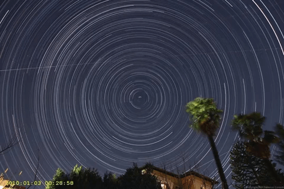

1. Benarkah bintang kelap-kelip seperti lampu hias?
Bintang adalah benda langit yang terdiri atas hidrogen, helium, dan unsur-unsur
lainnya. Bintang ada yang
memiliki cahaya sendiri dan ada yang hanya memantulkan cahaya dari bintang lain. Cahaya bintang yang
kamu lihat dari bumi mungkin berjarak puluhan tahun cahaya ke bumi. Cahaya bintang tersebut melewati
lapisan-lapisan atmosfer bumi dan terbiaskan oleh atmosfer karena adanya perbedaan suhu dan
kepadatan
atmosfer bumi. Oleh karena itu, kamu melihat bintang-bintang tersebut seperti berkelap-kelip di
langit
malam.
2. Mengapa bintang-bintang memiliki warna yang berbeda?
Ketika kamu melihat cahaya bintang di langit, warna apakah yang paling sering kamu
lihat? Mungkin
sebagian besar akan menjawab bahwa warna putih adalah warna yang paling sering terlihat. Apakah kamu
tahu jika bintang-bintang di langit memiliki 7 kelas yang akan menghasilkan warna yang berbeda?
Klasifikasi bintang tersebut berdasarkan kemampuan bintang untuk menyerap hidrogen. Dikutip dari
laman
Info Astronomy, bintang dibagi, ketujuh klasifikasi tersebut disebut dengan Oh Be A Fine Girl Kiss
Me.
Bintang yang berwarna biru (Kelas O) memiliki suhu yang lebih tinggi dari pada bintang berwarna
biru-putih (Kelas B). Bintang Kelas B memiliki suhu yang lebih panas dibandingkan dengan bintang
Kelas A
yang berwarna putih. Bintang yang berwarna merah di Kelas M adalah bintang suhunya paling rendah
dibandingkan dengan bintang lainnya. Sangat unik, bukan?
3. Apakah bintang berbentuk segi lima?
Ketika kamu diminta untuk menggambarkan satu gambar bintang, kamu pasti menggambarkan
bentuk segi lima,
seperti potongan buah belimbing. Para peneliti menyatakan bahwa bentuk bintang tidak segi lima,
tetapi
berbentuk bulat.Lalu, apakah yang menyebabkan kita melihat jika bintang tersebut berbentuk segi
lima?
Dikutip dari Berita Astronomi, difraksi adalah penyebab cahaya bintang yang kita lihat berbentuk
segi
lima yang memiliki ujung yang lancip.
4. Apakah bintang di langit tidak pernah bergerak?

Bumi berotasi pada sumbunya dan bumi mengelilingi matahari. Akibatnya, kita
seakan-akan melihat jika
matahari yang mengelilingi bumi. Hal yang sama tidak berlaku untuk bintang karena setiap kita
melihat
langit malam selama bermenit-menit, bintang-bintang tersebut seakan-akan tidak pernah bergerak dari
tempatnya. Bagaimana hal tersebut dapat terjadi?
Sebenarnya, bintang-bintang di langit selalu bergerak setiap saat. Akan tetapi, kita melihat jika
bintang-bintang tersebut tidak pernah bergerak dari tempatnya. Apakah penyebabnya? Dikutip dari Info
Astronomy, bintang-bintang bergerak sangat lambat. Gerakan yang sangat lambat tersebut tidak
terdeteksi
oleh mata manusia karena jarak bintang dan bumi yang sangat jauh. Itulah penyebab seakan-akan
bintang
terlihat tidak pernah bergerak di langit malam.
5. Kenapa ada rasi bintang?
Kamu pasti mengetahui nama-nama rasi bintang. Akan tetapi, apakah kamu tahu sejarah
kemunculan rasi
bintang tersebut?
Bintang adalah benda langit yang bergerak sangat lambat. Ditambah dengan jaraknya yang jauh dari
bumi
serta rotasi dan revolusi bumi, kita melihat bintang-bintang di langit tidak pernah bergerak.
Di zaman dulu yang belum ada teknologi teropong dan jam sebagai penanda waktu dan musim, nenek
moyang
kita mengamati langit dan melihat pola bintang dengan mata telanjang. Untuk mempermudah mereka
mengenali
bintang-bintang di langit yang kelihatannya tidak pernah bergerak, mereka menciptakan pola
bintang-bintang yang saat ini disebut dengan rasi bintang, seperti Libra, Taurus, dan Pisces.